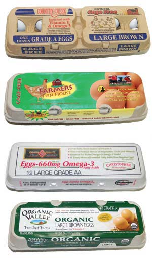

On a recent Saturday afternoon I bought three dozen eggs from my local Wild Oats supermarket. All were large, brown, cage-free, certified organic eggs. The least expensive, at $3.19, advertised “225 mg of Omega-3 per egg.” The most expensive cost $4.29 and said “Two eggs contain 400 mg of Omega-3.” These were Grade AA, the highest level in the USDA’s voluntary cosmetic grading system for eggs (all the others were Grade A), and were positioned behind a little shelf tag encouraging me to “Buy Local” (although they didn’t appear to be local). The third dozen cost $3.49 and said nothing about omega-3 levels.
My observations on cracking open some samples? The priciest eggs had the lowest apparent quality, i.e. pale, flat yolks and loose whites. The best-looking were the $3.49 eggs, with unknown omega-3 levels. But none looked anywhere near as good as a sample bought directly from a farmer who raises pastured poultry about five miles from where I live and sells eggs for $3 a dozen.
Conventional egg production - that is to say, the vast majority of egg production in the United States - is not a pretty business. Laying hens are crammed five or six to a cage in stacked rows of cages designed for automated feeding, watering and egg-collecting. As many as 100,000 birds can be confined in a single warehouse, each bird with less than 67 square inches, about two-thirds the size of a sheet of paper, to call its own. The crowded conditions lead to cannibalism and other destructive behavior, so the birds’ beaks are cut off at an early age, a procedure that could be likened to cutting off a child’s finger tips, in terms of its impact on the animals’ dexterity and sensory experience. The industry favors windowless warehouses with prolonged artificial light to stimulate maximum egg-laying. When egg production drops off, food is withheld as a way of sending the birds into a forced molt followed by another round of egg laying before being disposed of.
The adoption of practices like these has paralleled the spread of salmonella as a bacterial contaminant in eggs - the reason you’re cautioned not to eat raw cookie dough or Caesar dressing anymore. Crowded conditions, genetic uniformity and the widespread use of antibiotics in industrial agriculture favor the development of new and potentially more devastating pathogens.
All those new kinds of eggs for sale in the supermarket should help you opt out of this system, if you’re willing to spend a little more, right? Well, that depends. Here’s a short guide to some of the most common label claims found in the supermarket egg case:
“Cage Free,” “Free Range” or “Free Roaming.” None of these terms are currently regulated by the U.S. government, although there are some third-party verification programs (see below). Nevertheless, “free range” usually means the laying hens are raised in large flocks in big open warehouses rather than in stacked cages. They can walk around, flap their wings and preen their feathers a little. “Cage-free” does not mean outdoor access. “Free-range” implies some outdoor access, although it is probably very limited, and on dirt or concrete rather than pasture.
“Certified Humane.” Humane Farm Animal Care operates a certification program specifying that laying hens are uncaged, with access to perches, nest boxes and dust-bathing areas. There are stocking-density maximums but outdoor access is not required. Debeaking is allowed; starvation to induce molting is prohibited.
“Certified Organic.” Production methods must comply with the USDA National Organic Program, including organic, vegetarian feed, no use of antibiotics and no cages. Debeaking and forced molting by starvation are allowed. Organic standards require producers to “maintain livestock living conditions which accommodate the health and natural behavior of the animals.” How much access to the outdoors this requires for chickens is still being hotly debated. At this time, on large organic chicken farms, it may mean nothing more than a small door opening onto a concrete yard.
“Omega 3.” All eggs contain small amounts of omega-3 fatty acids, thought to be beneficial to human health. Omega-3 levels in eggs can be raised by supplementing the birds’ diet with things such as fish oil, flax seed or alfalfa meal (or by simply allowing the birds to forage on lawn or pasture).
Want to find local, farm-fresh, real eggs in your area? Search your ZIP code at the following egg-ceptional Web sites:
Eat Well Guide|
 MATTHEW T. STALLBAUMER Not all eggs are created equal, so it’s important to know what different labels really mean. |
|
|